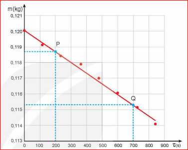

I KHÁI NIỆM NHIỆT HÓA HƠI RIÊNG
1 Hệ thức tính nhiệt lượng trong quá trình truyền nhiệt khi một lượng chất lỏng hóa hơi ở nhiệt độ không đổi
Nhiệt lượng cần cung cấp cho một lượng chất lỏng hóa hơi ở nhiệt độ không đổi phụ thuộc vào khối lượng và bản chất của chất lỏng. Thí nghiệm cho thấy nhiệt lượng này tỉ lệ thuận với khối lượng của chất lỏng:
Trong đó: \(Q\) là nhiệt lượng cần truyền cho chất lỏng (J); \(m\) là khối lượng chất lỏng (kg).
Với mỗi chất lỏng, hằng số trong hệ thức (6.1) có độ lớn riêng. Hằng số này được gọi là nhiệt hóa hơi riêng của chất lỏng, kí hiệu là \(L\), có giá trị là:
Do đó, hệ thức tính nhiệt lượng cần cung cấp cho một lượng chất lỏng hóa hơi hoàn toàn ở nhiệt độ không đổi là:
Bảng 6.1. Giá trị gần đúng của nhiệt hóa hơi ở nhiệt độ sôi dưới áp suất tiêu chuẩn của một số chất
| Chất | Nhiệt độ sôi (\(^\circ\text{C}\)) | Nhiệt hóa hơi riêng (\(\text{J/kg}\)) |
|---|---|---|
| Nước | 100 | \(2,26 \cdot 10^6\) |
| Rượu | 78 | \(8,57 \cdot 10^5\) |
| Thủy ngân | 357 | \(2,85 \cdot 10^5\) |
| Ether | 34,5 | \(0,40 \cdot 10^6\) |
2 Định nghĩa nhiệt hóa hơi riêng
Nhiệt hóa hơi riêng của một chất lỏng là nhiệt lượng cần để làm cho một kilôgam chất lỏng đó hóa hơi hoàn toàn ở nhiệt độ xác định.
Chất lỏng có thể hóa hơi ở các nhiệt độ khác nhau. Thường thì nhiệt hóa hơi riêng của một chất tăng khi nhiệt độ giảm. Ví dụ, nhiệt hóa hơi riêng của nước ở \(100^\circ\text{C}\) là \(2,26 \cdot 10^6\,\text{J/kg}\), ở \(50^\circ\text{C}\) là \(2,39 \cdot 10^6\,\text{J/kg}\).
Nhiệt hóa hơi riêng là thông tin cần thiết trong việc thiết kế, chế tạo các sản phẩm có sử dụng hiện tượng hóa hơi nhằm tiết kiệm năng lượng, bảo vệ môi trường. Ví dụ như các thiết bị làm lạnh (máy điều hòa nhiệt độ, dàn lạnh, dàn bay hơi,...), nồi hấp tiệt trùng trong y học, thiết bị xử lý rác thải ứng dụng công nghệ nhiệt hóa hơi,...
1. Tính nhiệt lượng cần thiết để làm cho 10 kg nước ở \(25^\circ\text{C}\) chuyển hoàn toàn thành hơi ở \(100^\circ\text{C}\). Cho nhiệt dung riêng của nước là \(4200\,\text{J/kg.K}\), nhiệt hóa hơi riêng của nước ở \(100^\circ\text{C}\) là \(2,26 \cdot 10^6\,\text{J/kg}\).
Lời giải:
Nhiệt lượng cần cung cấp để 10 kg nước tăng nhiệt độ từ \(25^\circ\text{C}\) đến \(100^\circ\text{C}\):
\[ Q_1 = m \cdot c \cdot \Delta t = 10 \cdot 4200 \cdot (100 - 25) = 3.150.000\,\text{J} \]
Nhiệt lượng cần cung cấp để 10 kg nước ở \(100^\circ\text{C}\) hóa hơi hoàn toàn:
\[ Q_2 = L \cdot m = 2,26 \cdot 10^6 \cdot 10 = 22.600.000\,\text{J} \]
Tổng nhiệt lượng cần thiết:
\[ Q = Q_1 + Q_2 = 3.150.000 + 22.600.000 = 25.750.000\,\text{J} = 25,75\,\text{MJ} \]
2. Vận động viên chạy Marathon mất rất nhiều nước trong khi thi đấu. Các vận động viên thường chỉ có thể chuyển hóa khoảng 20% năng lượng hóa học dự trữ trong cơ thể thành năng lượng dùng cho các hoạt động của cơ thể, đặc biệt là hoạt động chạy. Phần năng lượng còn lại chuyển thành nhiệt thải ra ngoài nhờ sự bay hơi của nước qua hô hấp và da để giữ cho nhiệt độ của cơ thể không đổi. Nếu vận động viên dùng hết 11 000 kJ trong cuộc thi thì có khoảng bao nhiêu lít nước đã thoát ra khỏi cơ thể? Coi nhiệt độ cơ thể của vận động viên hoàn toàn không đổi và nhiệt hóa hơi riêng của nước trong cơ thể vận động viên là \(2,45 \cdot 10^6\,\text{J/kg}\).
Lời giải:
Tổng năng lượng tiêu thụ: \(E = 11.000\,\text{kJ} = 11.000.000\,\text{J}\).
Tỉ lệ năng lượng chuyển thành nhiệt thải ra ngoài: \(100\% - 20\% = 80\%\).
Nhiệt lượng cơ thể cần giải phóng qua sự thoát hơi nước:
\[ Q = 0,80 \cdot E = 0,80 \cdot 11.000.000 = 8.800.000\,\text{J} \]
Khối lượng nước bay hơi để thải hết nhiệt lượng trên:
\[ m = \frac{Q}{L} = \frac{8.800.000}{2,45 \cdot 10^6} \approx 3,59\,\text{kg} \]
Vì khối lượng riêng của nước xấp xỉ \(1\,\text{kg/lít}\) nên lượng nước thoát ra khoảng 3,59 lít.
II THỰC HÀNH ĐO NHIỆT HÓA HƠI RIÊNG CỦA NƯỚC
1 Mục đích thí nghiệm
Xác định nhiệt hóa hơi riêng của nước ở nhiệt độ sôi (\(100^\circ\text{C}\)).
2 Dụng cụ thí nghiệm
- Chuẩn bị bộ dụng cụ thí nghiệm như bài đo nhiệt dung riêng (Hình 4.1), kết hợp cân điện tử đặt dưới nhiệt lượng kế.
- Một lượng nước nóng.
 Hình 6.1. Bộ thí nghiệm đo nhiệt hóa hơi riêng của nước
Hình 6.1. Bộ thí nghiệm đo nhiệt hóa hơi riêng của nước
3 Thiết kế phương án thí nghiệm
Thảo luận trả lời các câu hỏi thiết kế phương án:
- Từ công thức (6.3), cho biết cần đo đại lượng nào để xác định nhiệt hóa hơi riêng của nước?
- Nhiệt lượng làm cho nước trong bình nhiệt lượng kế hóa hơi được lấy từ đâu?
- Xác định nhiệt lượng nước trong bình nhiệt lượng kế thu được để hóa hơi bằng cách nào?
- Mô tả các bước tiến hành thí nghiệm.
- Để đảm bảo an toàn trong khi làm thí nghiệm cần phải chú ý điều gì?
Hướng giải quyết:
1. Cần đo: Khối lượng nước bị hóa hơi \(\Delta m = m_P - m_Q\) và nhiệt lượng \(Q\) tỏa ra từ điện trở trong khoảng thời gian đó.
2. Nhiệt lượng tỏa ra từ dây điện trở khi có dòng điện chạy qua.
3. Xác định nhiệt lượng thu được qua công suất và thời gian: \(Q = \overline{P} \cdot (\tau_Q - \tau_P)\).
4. Các bước: Cho nước nóng vào bình \(\rightarrow\) Bật điện trở làm nước sôi \(\rightarrow\) Đọc công suất, thời gian và khối lượng hiển thị trên cân \(\rightarrow\) Xử lý đồ thị \(m(\tau)\) để tính \(L\).
5. An toàn: Cẩn thận tránh phỏng hơi nước sôi, cẩn trọng với thiết bị điện công suất lớn.
4 Tiến hành thí nghiệm
- Đặt nhiệt lượng kế lên cân. Đổ nước nóng vào nhiệt lượng kế. Xác định khối lượng nước trong bình.
- Tháo nắp bình ra khỏi nhiệt lượng kế.
- Nối oát kế với điện trở và nguồn điện.
- Đặt dây điện trở vào nhiệt lượng kế sao cho toàn bộ dây điện trở chìm trong nước.
- Bật nguồn điện.
- Đun sôi nước trong bình nhiệt lượng kế. Sau mỗi khoảng thời gian 2 phút, đọc số đo công suất trên oát kế, khối lượng nước trong bình nhiệt lượng kế trên cân. Ghi các kết quả vào bảng.
- Tắt nguồn điện.
Bảng 6.2. Ví dụ về kết quả thí nghiệm đo nhiệt hóa hơi riêng của nước
| Thời gian \(\tau\) (s) | 0 | 120 | 240 | 360 | 480 | 600 | 720 | 840 |
|---|---|---|---|---|---|---|---|---|
| Công suất \(\mathcal{P}\) (W) | 0 | 15,21 | 15,19 | 15,21 | 15,23 | 15,19 | 15,21 | 15,19 |
| Khối lượng \(m\) (kg) | 0,1200 | 0,1191 | 0,1184 | 0,1179 | 0,1170 | 0,1161 | 0,1152 | 0,1141 |
5 Kết quả thí nghiệm
Vẽ đồ thị khối lượng \(m\) theo thời gian \(\tau\). Vẽ đường thẳng đi gần các điểm thực nghiệm nhất (Hình 6.1).
Chọn hai điểm \(P, Q\) tùy ý trên đồ thị, xác định giá trị khối lượng \(m_P, m_Q\) và thời gian \(\tau_P, \tau_Q\) tương ứng.
Công thức tính nhiệt hóa hơi riêng của nước:
\[ L = \frac{Q}{m} = \frac{\overline{\mathcal{P}}(\tau_Q - \tau_P)}{m_P - m_Q} \]Trong đó \(\overline{\mathcal{P}}(\tau_Q - \tau_P)\) là nhiệt lượng do dòng điện qua điện trở tỏa ra trong thời gian \(\tau_Q - \tau_P\); \((m_P - m_Q)\) là khối lượng nước đã hóa hơi trong khoảng thời gian trên.

Hình 6.1. Đồ thị quan hệ giữa khối lượng và thời gian của quá trình hóa hơi của nướcEM ĐÃ HỌC
- Nhiệt hóa hơi riêng của một chất lỏng là nhiệt lượng cần để làm cho một kilôgam chất lỏng đó hóa hơi hoàn toàn ở nhiệt độ xác định.
- Đơn vị của nhiệt hóa hơi riêng là: \(\text{J/kg}\).
- Hệ thức tính nhiệt lượng trong quá trình truyền nhiệt để làm chất lỏng hóa hơi hoàn toàn ở nhiệt độ xác định: \(Q = Lm\).
- Cách xác định nhiệt hóa hơi riêng của nước.
EM CÓ THỂ
- Xác định được nhiệt hóa hơi riêng của nước ở nhiệt độ sôi.
- Sử dụng khái niệm nhiệt hóa hơi riêng để giải thích các hiện tượng có liên quan.
EM CÓ BIẾT: Ẩn nhiệt riêng
Người ta gọi nhiệt nóng chảy riêng và nhiệt hóa hơi riêng là "ẩn nhiệt riêng" vì sự truyền nhiệt trong các trường hợp này không được biểu hiện bằng sự thay đổi nhiệt độ.
CỦNG CỐ LÝ THUYẾT & BÀI TẬP
AI LÀ TRIỆU PHÚ VẬT LÝ
Trả lời 10 câu hỏi để chinh phục đỉnh cao tri thức Bài 6!
Bài tập tự luận tính toán
Bài 1: Tính nhiệt lượng cần cung cấp để làm hóa hơi hoàn toàn 2 kg nước ở nhiệt độ sôi \(100^\circ\text{C}\). Cho nhiệt hóa hơi riêng của nước ở \(100^\circ\text{C}\) là \(L = 2,26 \cdot 10^6\,\text{J/kg}\).
Lời giải:
Nhiệt lượng cần cung cấp để 2 kg nước hóa hơi hoàn toàn ở \(100^\circ\text{C}\):
\[ Q = L \cdot m = (2,26 \cdot 10^6) \cdot 2 = 4.520.000\,\text{J} = 4,52\,\text{MJ} \]
Bài 2: Một ấm đun nước điện công suất \(1500\,\text{W}\) chứa 1 kg nước đang ở nhiệt độ sôi \(100^\circ\text{C}\). Bỏ qua sự mất nhiệt ra môi trường xung quanh. Hỏi sau bao lâu kể từ khi nước bắt đầu sôi thì 200 g nước trong ấm bị hóa hơi? (Cho \(L_{\text{nước}} = 2,26 \cdot 10^6\,\text{J/kg}\)).
Lời giải:
Đổi \(m = 200\,\text{g} = 0,2\,\text{kg}\).
Nhiệt lượng cần thiết để hóa hơi 0,2 kg nước ở \(100^\circ\text{C}\):
\[ Q = L \cdot m = 2,26 \cdot 10^6 \cdot 0,2 = 452.000\,\text{J} \]
Thời gian đun để hóa hơi lượng nước trên:
\[ t = \frac{Q}{P} = \frac{452.000}{1500} \approx 301,33\,\text{giây} \approx 5\,\text{phút}\,1,33\,\text{giây} \]
Bài 3: Trong một thí nghiệm đo nhiệt hóa hơi riêng của nước, người ta ghi nhận công suất trung bình của dây điện trở là \(15,2\,\text{W}\). Trong khoảng thời gian 10 phút, khối lượng nước trong bình giảm từ \(120,0\,\text{g}\) xuống còn \(115,5\,\text{g}\). Tính nhiệt hóa hơi riêng thu được từ kết quả thực nghiệm này.
Lời giải:
Khối lượng nước đã hóa hơi: \(\Delta m = 120,0 - 115,5 = 4,5\,\text{g} = 0,0045\,\text{kg}\).
Thời gian đun: \(\tau = 10\,\text{phút} = 600\,\text{giây}\).
Nhiệt lượng tỏa ra từ dòng điện trong thời gian trên:
\[ Q = \overline{\mathcal{P}} \cdot \tau = 15,2 \cdot 600 = 9120\,\text{J} \]
Nhiệt hóa hơi riêng tính được:
\[ L = \frac{Q}{\Delta m} = \frac{9120}{0,0045} \approx 2.026.667\,\text{J/kg} \approx 2,03 \cdot 10^6\,\text{J/kg} \]